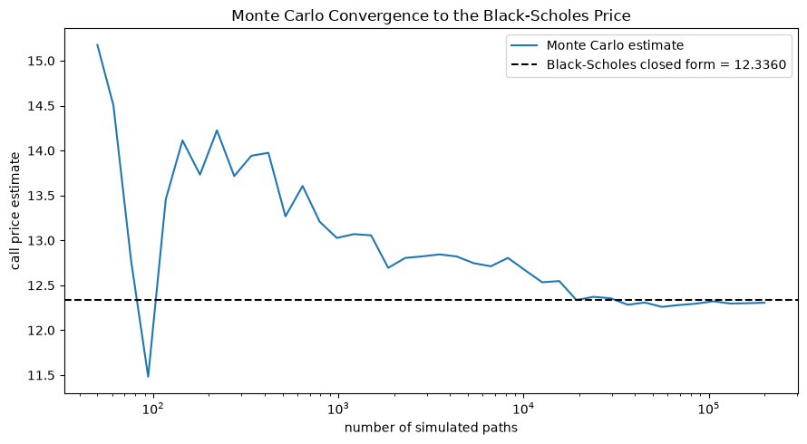
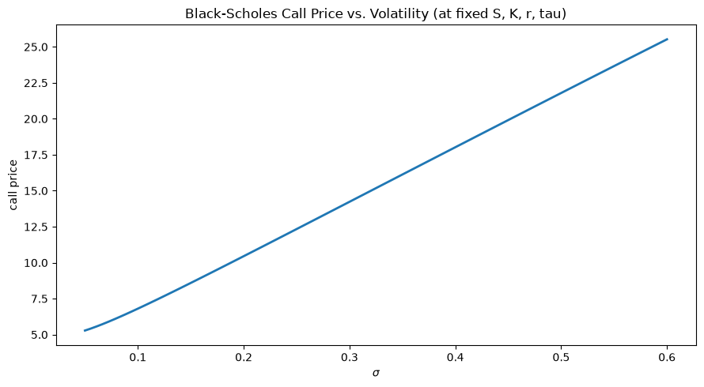

Today we combine all three into a single result: a closed-form price for a European option.
The Goal
A European call option with strike K and maturity T pays \max(S(T) - K, 0) at time T — the right (not obligation) to buy the stock at K.
Question: if S(t) follows GBM with volatility \sigma, and there’s a risk-free rate r available for borrowing/lending, what should this option cost today, at t < T?
The surprise, and the point of this module: the answer does not depend on \mu, the stock’s real-world expected growth rate — even though \mu is exactly what most investors care about when they buy the stock itself. We’ll derive this two independent ways and see why it’s true both times.
Two Routes to the Same Answer
Replication / no-arbitrage (Part 2): build a portfolio of stock and cash that exactly reproduces the option’s payoff at every instant. If it does, its price today must equal the option’s price — otherwise there’s a free lunch.
Risk-neutral pricing (Part 3): reweight probabilities so the discounted stock price becomes a martingale, then the option price is just a discounted expectation.
Both use Itô’s lemma. Both land on the same PDE and the same closed-form price.
Part 2: Replication and the Black-Scholes PDE
Setting Up a Hedge
Let V(t, S) denote the option’s value when the stock is at S at time t. Build a portfolio \Pi by holding the option (short one) and \Delta shares of stock:
\Pi = -V + \Delta S
Apply Itô’s lemma to V(t, S(t)), using dS = \mu S\,dt + \sigma S\,dW:
dV = \left(\frac{\partial V}{\partial t} + \mu S \frac{\partial V}{\partial S} + \tfrac{1}{2}\sigma^2 S^2 \frac{\partial^2 V}{\partial S^2}\right) dt + \sigma S \frac{\partial V}{\partial S}\, dW
Eliminating the Randomness
The portfolio’s change is d\Pi = -dV + \Delta\, dS. Substituting:
Notice \mu dropped out too — it only appeared multiplying \Delta and \dfrac{\partial V}{\partial S}, which just canceled once we set them equal.
No Arbitrage Pins Down the Return
\Pi is now riskless — no dW term, so its value evolves deterministically. A riskless portfolio must earn exactly the risk-free rate r, or there’s an arbitrage (borrow at r to buy it if it earns more; short it and lend at r if it earns less):
with terminal condition V(T, S) = \max(S - K, 0) for a call. Solving this PDE is the rest of the module.
Part 3: Risk-Neutral Pricing
The Same Idea, From a Different Angle
The PDE derivation is mechanical but opaque about why\mu disappears. Risk-neutral pricing makes it a definition rather than a coincidence.
Key fact (Girsanov’s theorem, stated without proof): there exists a probability measure Q, equivalent to the real-world measure, under which
dS = rS\,dt + \sigma S\, dW^Q
i.e. under Q the stock’s drift is r instead of \mu, with the same volatility \sigma. Under Q, the discounted price e^{-rt}S(t) is a martingale — literally the fair-game condition from Module 9, applied to the traded asset itself.
Pricing as a Discounted Expectation
If the option can be replicated by trading the stock and cash (Part 2 showed it can), no-arbitrage forces:
— literally “discount the expected payoff,” but under Q, not the real-world measure. Since dS = rS\,dt + \sigma S\,dW^Q is GBM with drift r, Module 9’s closed form applies directly:
Computing this expectation in closed form (a standard, if tedious, Normal-integral calculation) gives the Black-Scholes formula.
Why \mu Never Appears
\mu describes how investors expect the stock to perform — a real-world belief about risk and return. But the option is priced by replication, not by belief: the hedge in Part 2 only needs to track the stock’s moves, controlled by \sigma, not its drift.
Two people who disagree wildly about \mu (one bullish, one bearish) must still agree on the option’s no-arbitrage price, given the same S, K, T, r, \sigma — because both could construct the same replicating portfolio.
Part 4: The Black-Scholes Formula
The Closed-Form Price
For a non-dividend-paying stock, with \tau = T - t time remaining:
C = S\,N(d_1) - K e^{-r\tau} N(d_2), \qquad P = K e^{-r\tau} N(-d_2) - S\,N(-d_1)
where N(\cdot) is the standard Normal CDF. C and P solve the PDE from Part 2 with call/put terminal conditions, and are exactly the expectations from Part 3.
A model-free no-arbitrage identity, independent of Black-Scholes: C - P = S - Ke^{-r\tau}. Any correct pricing formula must satisfy it.
lhs = call_price - put_pricerhs = S - K * np.exp(-r * tau)print(f"C - P = {lhs:.4f}")print(f"S - K e^(-r tau) = {rhs:.4f}")
C - P = 4.8771
S - K e^(-r tau) = 4.8771
Verifying With Monte Carlo
Part 3’s derivation says the price is a discounted expectation under Q (drift r, not \mu). Simulate GBM paths with drift r directly and average the discounted payoff — no PDE, no closed form, just Module 9’s simulator:
import numpy as npimport matplotlib.pyplot as pltnp.random.seed(5005)S, K, r, sigma, tau =100.0, 100.0, 0.05, 0.25, 1.0sample_sizes = np.unique(np.geomspace(50, 200_000, 40).astype(int))Z_full = np.random.normal(size=sample_sizes[-1])S_T_full = S * np.exp((r -0.5* sigma**2) * tau + sigma * np.sqrt(tau) * Z_full)payoff_full = np.exp(-r * tau) * np.maximum(S_T_full - K, 0)mc_estimates = [payoff_full[:n].mean() for n in sample_sizes]fig, ax = plt.subplots(figsize=(9, 5))ax.plot(sample_sizes, mc_estimates, color="C0", lw=1.5, label="Monte Carlo estimate")ax.axhline(call_price, color="black", ls="--", lw=1.5, label=f"Black-Scholes closed form = {call_price:.4f}")ax.set_xscale("log")ax.set_xlabel("number of simulated paths")ax.set_ylabel("call price estimate")ax.set_title("Monte Carlo Convergence to the Black-Scholes Price")ax.legend()plt.tight_layout()plt.show()
The Monte Carlo estimate — built entirely from simulating S(T) under the risk-neutral drift r and averaging the discounted payoff — converges to the closed-form price as the number of paths grows. Two completely different derivations (a PDE solved analytically, and a simulated expectation) agree, which is exactly what Part 1 promised.
Verifying With Monte Carlo

Sensitivity to \sigma, Not \mu
import numpy as npimport matplotlib.pyplot as pltS, K, r, tau =100.0, 100.0, 0.05, 1.0sigmas = np.linspace(0.05, 0.6, 100)prices = [black_scholes(S, K, r, s, tau, "call") for s in sigmas]fig, ax = plt.subplots(figsize=(9, 5))ax.plot(sigmas, prices, color="C0", lw=2)ax.set_xlabel(r"$\sigma$")ax.set_ylabel("call price")ax.set_title("Black-Scholes Call Price vs. Volatility (at fixed S, K, r, tau)")plt.tight_layout()plt.show()
Price is monotonically increasing in \sigma — more volatility means more upside optionality with the same downside floor at 0 — and, as derived, changing \mu in the simulation above would move the stock’s expected path without moving this price at all. Try it: only \sigma, not \mu, is a free parameter here.
Sensitivity to \sigma, Not \mu

Part 5: Looking Ahead to CS 4
What This Buys Us
A closed-form price, computable from five observable-or-agreed-upon inputs: S, K, r, \sigma, \tau
A precise reason (\mu cancels under replication) that pricing doesn’t require forecasting the stock
\Delta = \dfrac{\partial V}{\partial S} from Part 2 is exactly the hedge ratio needed to manage risk on an option position — the subject of Module 11
What’s Still Open
Four of the five Black-Scholes inputs (S, K, r, \tau) are directly observable. The fifth, \sigma, is not — it’s a model assumption, not a market quote. Module 11 confronts this directly: given a real market option price, what \sigma makes Black-Scholes match it (implied volatility), and does a single constant \sigma actually fit real options well?
What We Learned: Module 10 Summary
Concept
Role
Delta hedge, \Delta = \partial V/\partial S
Chosen specifically to cancel the dW term in the replicating portfolio
Black-Scholes PDE
\partial V/\partial t + rS\,\partial V/\partial S + \tfrac{1}{2}\sigma^2S^2\,\partial^2 V/\partial S^2 - rV = 0, from no-arbitrage on the hedged portfolio
Risk-neutral measure Q
Reweights probabilities so discounted S(t) is a martingale, with drift r replacing \mu
\mu-invariance
The central result: option price depends on \sigma, not on the stock’s real-world expected return
Black-Scholes formula
Closed-form C, P in terms of S, K, r, \sigma, \tau via N(d_1), N(d_2)
Put-call parity
A model-free identity any correct pricing formula must satisfy
Looking Ahead: Module 11
Next module: Black-Scholes implementation — the Greeks (\Delta, \Gamma, \text{Vega}, \Theta), dynamic hedging in practice, implied volatility, and a direct confrontation with real data: does constant \sigma actually describe how options trade, or does the market show a volatility smile the model can’t capture? CS 4 (calibration and model limitations) is due at the end of Module 12.
References
Black, F. & Scholes, M. (1973). The Pricing of Options and Corporate Liabilities. Journal of Political Economy, 81(3), 637–654.
Merton, R. C. (1973). Theory of Rational Option Pricing. The Bell Journal of Economics and Management Science, 4(1), 141–183.
Shreve, S. (2004). Stochastic Calculus for Finance II: Continuous-Time Models. Springer.
Hull, J. C. Options, Futures, and Other Derivatives.